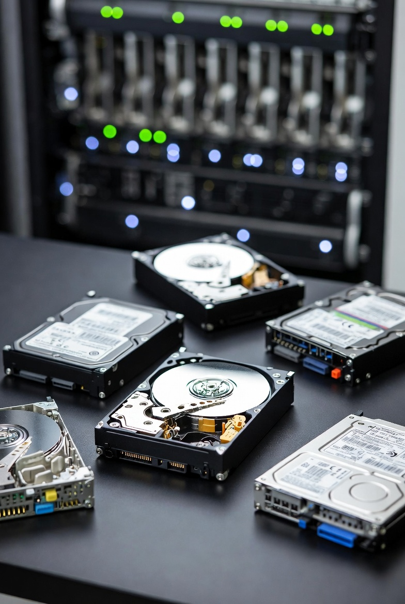

Subscription management
From the license to the day it is turned on. We help a Belleview office choose Business Basic, Standard, or Premium.
Microsoft 365 and cloud solutions · Belleview
Email, shared files, Teams, and OneDrive for a Belleview office are set up, moved over, and looked after by the Greatchoice team in Ocala. The local server and the desktops become a private cloud you can open from US 27, from home, or from a job site.
Microsoft 365
Licensing, the move, security, and the day-to-day care for Belleview offices. Business Basic, Standard, or Premium, matched to the staff you actually have.
From the license to the day it is turned on. We help a Belleview office choose Business Basic, Standard, or Premium.
Mail and files move off the system a Belleview office has now, and the people who will use Microsoft 365 get training. The changeover is planned so the counter and the back office can keep working.
Incoming Belleview messages pass through DNS controls, threat screens, junk filters, and encryption at Cloudflare. The broader program is on the cybersecurity page.
Exchange Online, SharePoint, Teams, and OneDrive for the Belleview office, configured and kept current.
Belleview mail and files are watched 24/7, so problems are found before they stop the work. Related protection is covered under cybersecurity.
Packages
Four licenses. We match the plan to a Belleview office, then keep supporting it. Call and we will walk through which one fits.
Cloud servers
The server in a Belleview closet becomes a virtual machine. Files stay available, and the hardware no longer has to live next to the water heater or the stockroom.
Healthcare, finance, and other regulated Belleview work get encryption and a server that is not shared with other businesses.
Every day produces a snapshot. If a file or the server needs to come back, we roll a Belleview machine to an earlier version from that day.
Dedicated fiber at the Ocala office carries the private cloud, about 10 miles northwest of Belleview. People in Belleview use that same connection for heavy work, without the lag of a crowded shared line.
Laptops, tablets, and phones get encrypted remote access, so a Belleview team can reach the office systems from home.
Processor choices include Intel and AMD. CPU, memory, and disk are sized for the Belleview workload and changed when the business changes.

Why move
An on-site server in a small Belleview building costs money to buy, cool, and replace, and it is hard to grow. A cloud server lets people work from the office on US 301 or from home.
Straight answers
Greatchoice Technologies provides Microsoft 365 and cloud services in Belleview, Florida. The work is scheduled from 317 NE 36th Ave, Suite 3 in Ocala. We set up Business Basic, Standard, or Premium, and a private cloud server with daily snapshots.
A cloud server is a virtual machine we host. The applications and the files live there, instead of on a physical box in the Belleview office.
A hosted server costs less to keep than a box the Belleview office owns, it is easier to grow, and people can reach the business systems from anywhere. That fits offices with remote or hybrid teams.
Yes. Other companies do not sit on this private cloud. Clinics, finance offices, and government contractors in Belleview get that separation, which helps with compliance and speed.
Each day a snapshot is taken of the virtual machines. When a Belleview server needs to come back, it rolls to an earlier day.
Yes. The Belleview server grows or shrinks in CPU, memory, and storage. Light applications and heavier workloads receive different sizes, built around the software you actually run.
A VPN with end-to-end encryption carries remote access. Staff can work from a Belleview desk, from home, or on the road while the systems stay closed to the public internet.
The servers use dedicated fiber at the Ocala office. Belleview businesses reach that connection with low delay. That matters for software that feels slow when the line lags.
Often, no. Small and mid-size Belleview companies move to the cloud so a full-time server person is unnecessary. Larger offices often keep their own people and take server upkeep off that desk.
Clinics, finance offices, schools, and contractors use it often. A Belleview shop or professional office that wants room to grow can use it too.
If a Belleview office wants lower cost, stronger security, easier compliance, or a way for people to work from home, it is worth a look. We will sit down and design what this office needs.
Next step
Bring the server, the email, and the shared files from the Belleview office. We will tell you what should move, what can stay, and which Microsoft 365 plan fits.
Belleview work is scheduled from here, about 10 miles northwest.
317 NE 36th Ave, Suite 3
Ocala, FL 34470